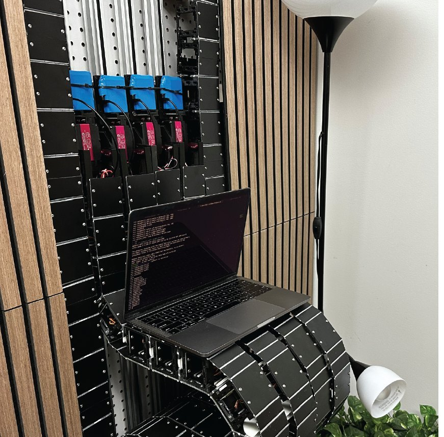
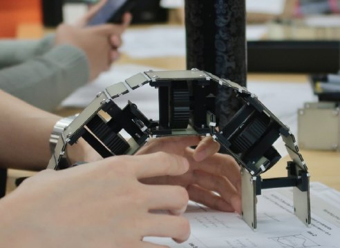
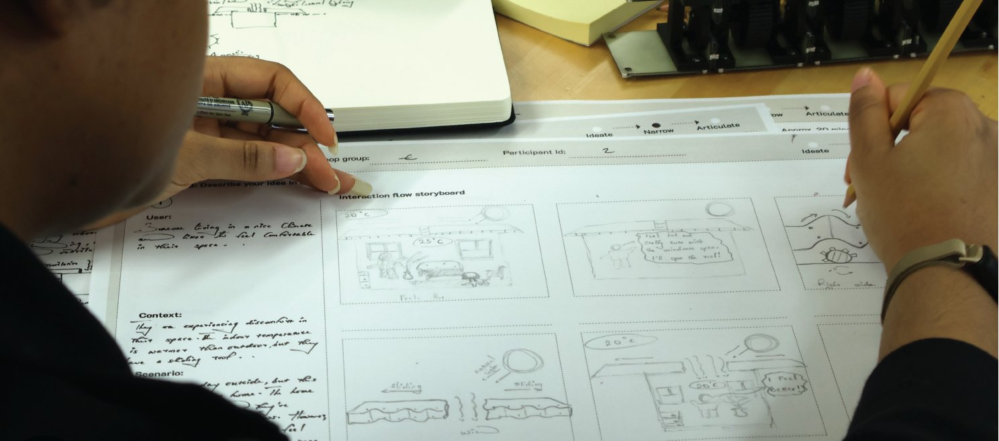
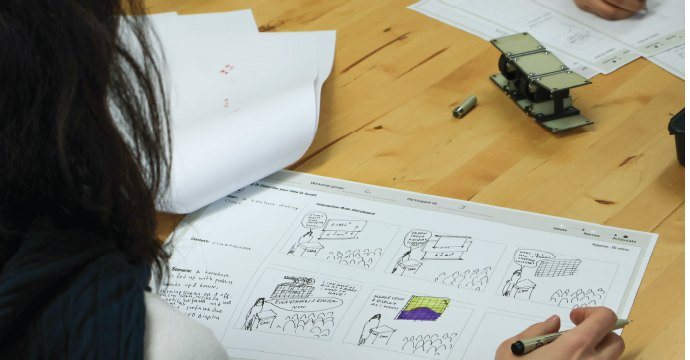
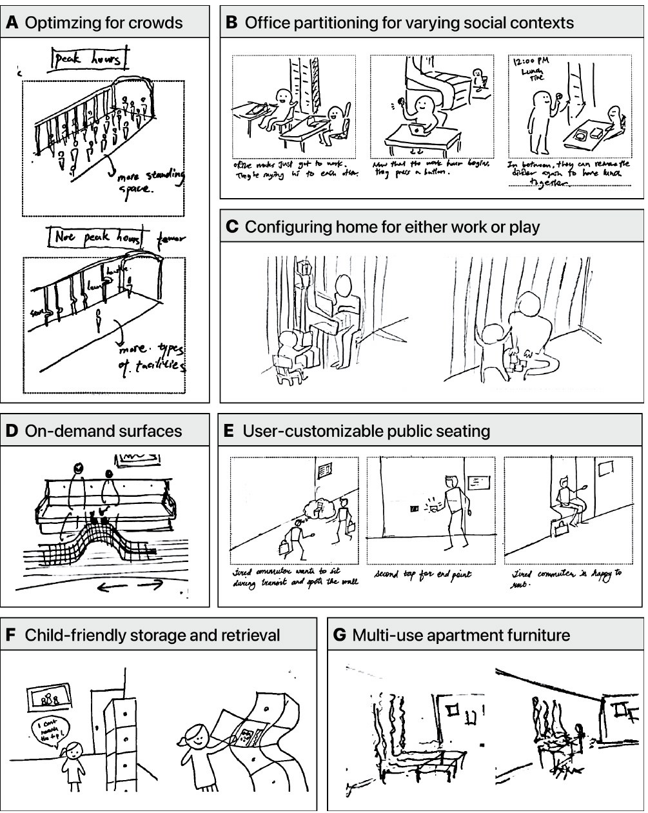
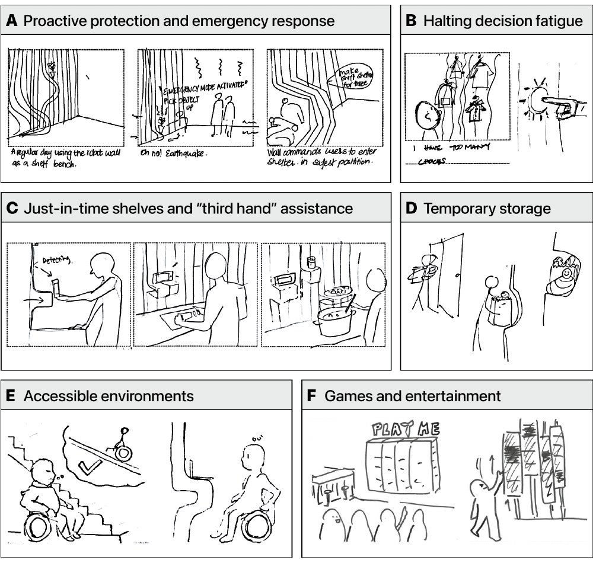
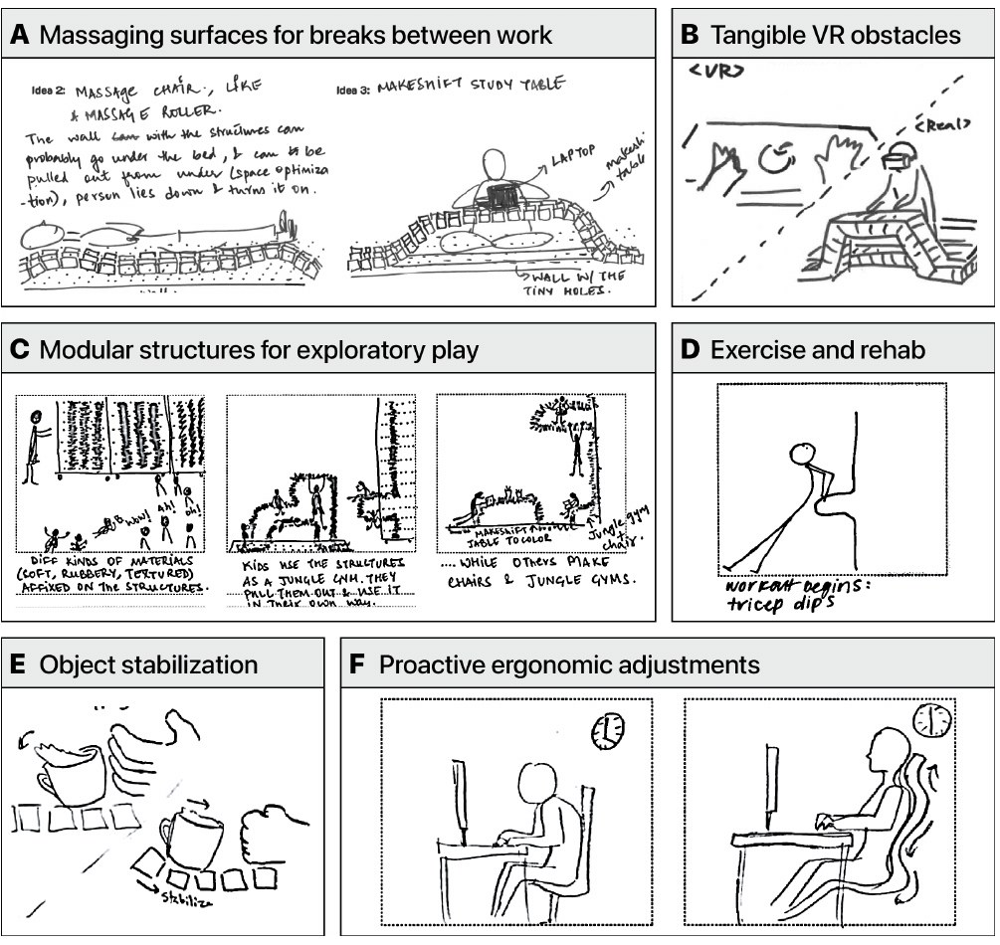
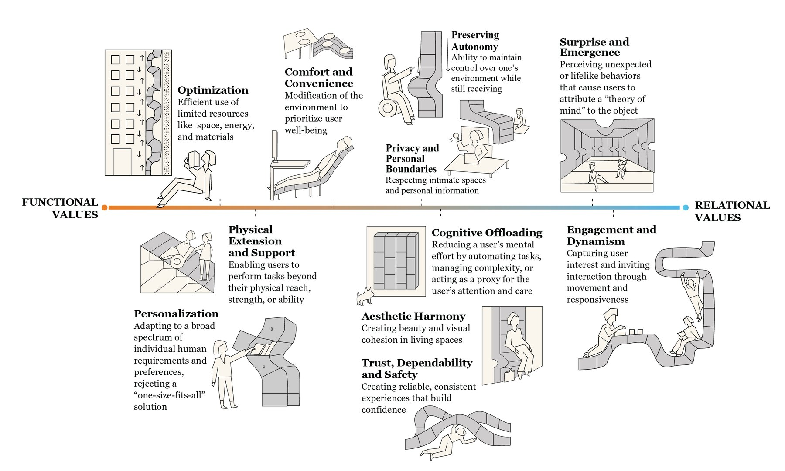

i.
a robotic wall
The platform is a shape-changing wall of three columns that move on two-meter rails. It changes from a flat, rigid surface into a curved shelf or awning, stable enough to hold a laptop, cookware or books.

research / research through design
We expect buildings to stay still. Shape-changing walls, floors and furniture could instead adapt: a room for focused work in the morning could make space for exercise or dinner in the evening, and a staircase that is easy at forty could change at eighty.
The project asked two questions. What makes a shape-changing environment valuable? And how do people naturally interact with one? The team ran speculative design workshops for the first question and an elicitation study for the second.
The platform is a shape-changing wall of three columns that move on two-meter rails. It changes from a flat, rigid surface into a curved shelf or awning, stable enough to hold a laptop, cookware or books.

Twenty architects and designers, aged 24 to 34, took part in four three-hour workshops of four to six people. Each began with a demonstration of the wall and a small toy model to reconfigure by hand. We gave no example uses, so we would not steer their ideas.



Participants imagined walls that make room for crowds at peak hours, turn into shelters in an earthquake, hand you ingredients while you cook, help someone through rehabilitation exercises or become a game.



We read all storyboards and discussion transcripts and coded them with qualitative content analysis. Seven topics came up. We then coded every quote about values and refined the categories into eleven values.
The values run from functional, the practical work a wall does, to relational, how people and a moving environment depend on each other. Each value is illustrated as a scene with the wall.

The team then ran a Wizard-of-Oz elicitation study with 12 people completing tasks with the wall. People mixed speech, gesture and touch, and left much of their intent unsaid. Both studies point to environments that need to infer what people want, while keeping them in control.